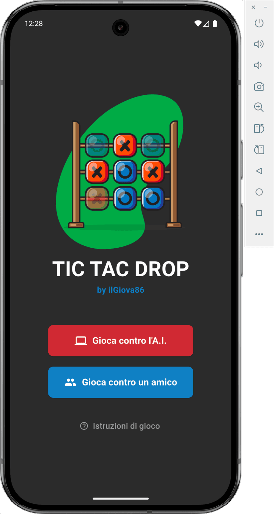

Tic Tac Drop - Mobile Application
Advanced tic-tac-toe app where pieces disappear after a few turns, adding a strategic twist to classic gameplay.
Dart
Flutter
Advanced tic-tac-toe app where pieces disappear after a few turns, adding a strategic twist to classic gameplay.
Tic Tac Drop takes the familiar 3×3 tic-tac-toe grid and gives it a sliding-window twist: each player can only ever have three marks on the board. Placing a fourth automatically removes that player's oldest mark before the new one lands, so the board is always in flux and games rarely end in a draw.
Play pass-and-play with a friend on the same device, or face a built-in computer opponent. With marks disappearing, both players need to think not just about making three in a row now, but about which of their own pieces is about to vanish.
The cell holding the oldest piece blinks when its owner already has three marks, so the next removal is telegraphed rather than a surprise.
The computer follows a priority ladder: win immediately if possible, otherwise block the human's winning move, otherwise take the best available square — always accounting for the piece it would have to drop.
The winning line is picked out in gold, and a scoreboard keeps X and O results across games in a session.

A single-screen Flutter app. Each player's moves are tracked in a first-in, first-out queue, which makes the oldest-piece removal natural, and the whole game logic, board and computer opponent live in one widget.
Implements the game state machine: move validation, the FIFO eviction of each player's oldest piece via dart:collection's Queue, the eight-combination win check shared by both the human and the AI, and the AI's win/block/center/random decision ladder.
Renders the board with a GridView.builder over AnimatedContainer / AnimatedDefaultTextStyle cells, drives the blinking "next to be removed" cue and tap feedback with AnimationController/Tween, and adapts the layout between portrait and landscape with LayoutBuilder.